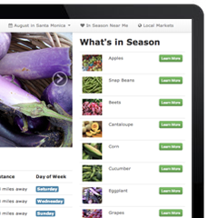

Travel Posts

This is a simple app that works both on mobile and desktop machines. It allows users to read and post comments based on geolocation. The backend is build in Ruby on Rails, and uses postgresql and ActiveRecord for the database. The mapping is done in leaflet and the majority of interactivity is built on the front end using jQuery.
In Peak Season
This project was inspired by my experience of great seasonal food during my travels overseas. Most cultures in the world source food locally and seasonally. Their recipes are built on these ingredients, and are only prepared in season. I wanted to build a tool to help us do the same here.
This app locates the user's geolocation, and then looks up all local food items that are in season nearby. The user can then find recipes that use those ingredients, and find the nearest farmers markets to buy at. The app is responsive design, and works well on mobile devices.